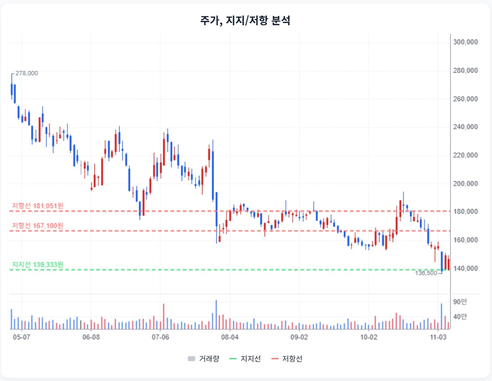
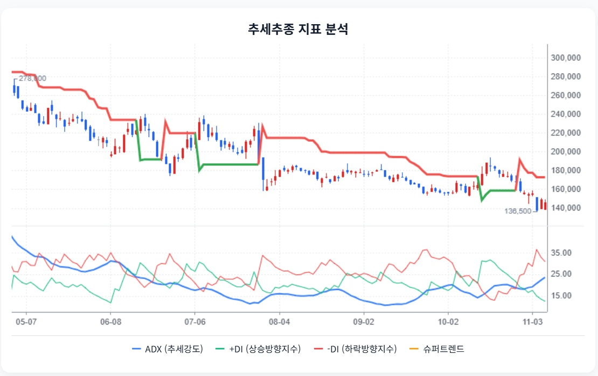

하이브 · StockEasy 읽기용 정리
첨부 확인 2026-11-08 · 핵심 내용을 문단별로 재구성했습니다. 원문 전체 전사가 아니며, 차트는 첨부 화면에서 발췌했습니다. 원문의 매수·매도 표현과 가격 구간은 자동 매매 신호로 채택하지 않았습니다.
1. 매출 기록보다 주주에게 남은 이익
StockEasy 원문 요약 · 주장과 가정 포함
원문은 3분기 매출 1조 5,257억원·영업이익 1,885억원의 호조에도 지배주주 순이익은 68억원 적자였다고 설명합니다. 영업외 비용과 해외 자산의 환산·평가 영향을 핵심 쟁점으로 삼습니다.
2. 2027년 회복 전망은 공연 일정과 비용의 가정
StockEasy 원문 요약 · 주장과 가정 포함
원문은 2026년 EPS 692~2,097원의 차이를 영업외손익·세율·희석 주식 수로 설명합니다. 2027년 8,012~9,352원대 EPS는 공연·MD·신규 IP·정산 비용의 전제에 달렸다고 봅니다.
BTS 활동 일정, 신규 아티스트 모객, 재계약 정산율은 확정 공시와 전망을 나눠 확인해야 합니다.
3. 7,767억원을 자유롭게 쓸 수 있는 현금으로 보지 않기
StockEasy 원문 요약 · 주장과 가정 포함
원문은 현금 7,544억원+유동금융자산 1조 1,398억원에서 매입·정산채무 7,041억원, 선수금 3,159억원, 잔여 CB 975억원을 빼 7,767억원을 제시합니다.
해외 레이블 손상 위험과 유동부채 증가, Weverse의 지속 이익 여부도 점검 대상으로 제시합니다.
4. 13만원대 가치 하단은 검증된 바닥이 아닙니다
StockEasy 원문 요약 · 주장과 가정 포함
원문은 보수적 EPS 6,716원에 PER 20~23배를 적용해 134,320~155,811원, 기본 EPS 8,012~8,993원에 20~29배를 적용해 160,240~260,797원을 제시합니다.
활동 지연·신규 IP 부진·손상차손 반복·차환 부담·희석이 투자 가설을 다시 검토할 조건입니다.
5. 기술적 반등과 이익 회복을 따로 확인
StockEasy 원문 요약 · 주장과 가정 포함
원문은 138,000~139,333원 지지 구간, 167,100원·181,051원 저항을 제시하고 모멘텀 반등과 추세 전환을 구분합니다.

StockEasy 원문 발췌 · 첨부 당시 주가/지지·저항. 현재 시세가 아닙니다.

StockEasy 원문 발췌 · 추세 지표. 외부 지표를 자동 매매에 채택하지 않았습니다.